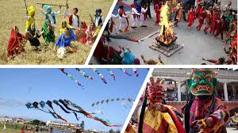
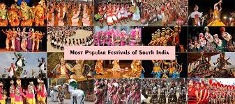
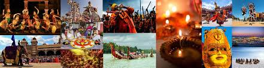
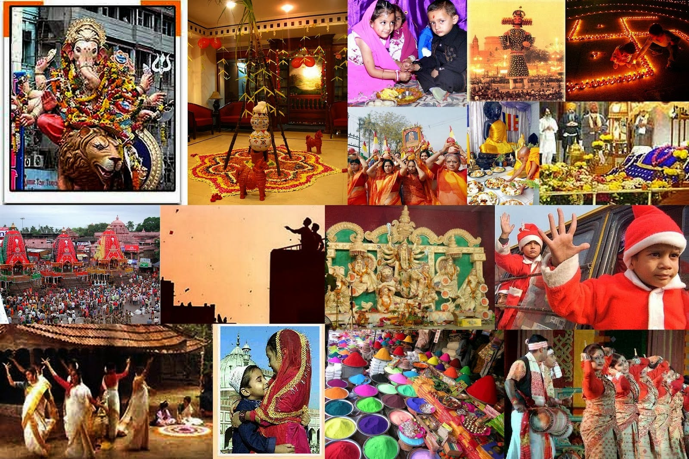
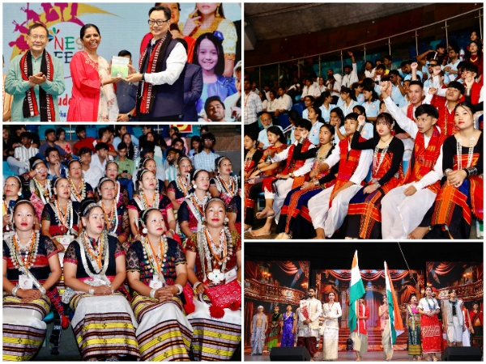

Explore the Diversity of Indian Festivals
North India festivals are marked by vibrant processions, elaborate rituals, and deep-rooted traditions that have been passed down for generations. The celebrations reflect a rich cultural tapestry filled with theatrical displays and communal joy.
Celebrations in South India are deeply intertwined with agricultural cycles and religious devotion. Traditional music, dance performances, and temple rituals play a central role during these festivals.
East India festivals often blend cultural rituals with folk traditions. The celebrations are not only religious but also serve as a platform to showcase regional music, dance, and art forms.
In West India, festivals are celebrated with grandeur. They feature lively street parades, impressive idols, and extensive use of traditional decorations that engage entire communities.
Festivals in North-East India are strongly influenced by indigenous customs and local folklore. These events are colorful affairs with traditional dances, community feasts, and a celebration of nature.
